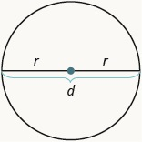
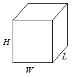
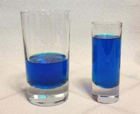

6.3 Geometry
Upon completion of this section, you should be able to
- Solve application problems involving similar triangles.
- Solve application problems involving area and perimeter.
- Solve application problems involving volume and surface area.
Applications with Similar Triangles
Geometric shapes, as well as area and volumes, can often be important in problem solving. In some cases we can solve a problem by working with two dimensional shapes while in others we need to think three dimensional. It is important on many of these to try to draw a diagram to determine which types of formulas you will want to use.
One strategy for working with some problems is to use the idea of similar triangles. If two triangles have the same angles inside we say they are similar and this means that each side is proportional to each other. That means we can set up a relation between the ratio of two sides between the two triangles as long as those sides come from the same sides corresponding to the same angles.
Properties of Similar Triangles
If two triangles are similar, then their corresponding angle measures are equal and their corresponding side lengths are in the same ratio.
![Two triangles are shown. They appear to be the same shape, but the triangle on the right is smaller. The vertices of the triangle on the left are labeled A, B, and C. The side across from A is labeled a, the side across from B is labeled b, and the side across from C is labeled c. The vertices of the triangle on the right are labeled X, Y, and Z. The side across from X is labeled s, the side across from Y is labeled y, and the side across from Z is labeled z. Beside the triangles, it says that the measure of angle A equals the measure of angle X, the measure of angle B equals the measure of angle Y, and the measure of angle C equals the measure of angle Z. Below this is the proportion a over x equals b over y equals c over z](images/SimilarTriangles.jpg)
In the first example you will see a classic problem of measuring the height of an object by setting up a similar triangles.
Example 1
You are curious how tall a tree is, but don’t have any way to climb it. Suppose the tree is casting a shadow that is 15 ft long. A person standing by the tree is 6 ft tall and casts a shadow that is 1.5 ft long. How tall is that tree?
There are several approaches we could take. We’ll use one based on triangles, which requires that it’s a sunny day. Since the triangle formed by the tree and its shadow has the same angles as the triangle formed by me and my shadow, these triangles are called similar triangles and their sides will scale proportionally. In other words, the ratio of height to width will be the same in both triangles. Using this, we can find the height of the tree, which we’ll denote by h:
Multiplying both sides by 15, we get h = 60. The tree is about 60 ft tall.
Video Solution (cc)
Review of Measurements
When you measure your height or the length of a garden hose, you use a ruler or tape measure. A tape measure might remind you of a line—you use it for linear measure, which measures length. Inch, foot, yard, mile, centimeter and meter are units of linear measure.
![A picture of a portion of a tape measure is shown. The top shows the numbers 1 through 5. The portion from the beginning to the 1 has a red circle and an arrow to a picture from 0 to 1 inch, with 1 sixteenth, 1 eighth, 3 eighths, 1 half, and 3 fourths labeled. Above this, it is labeled “Standard Measures.” The bottom of the tape measure shows the numbers 1 through 10, then 1 and 2. The region from the edge to about 3 and a half has a red circle with an arrow pointing to a picture from 0 to 3.5. It is labeled 0, 1 cm, 1.7 cm, 2.3 cm and 3.5 cm. Above this, it is labeled “Metric (S).”](images/tapemeasure.jpg)
When you want to know how much tile is needed to cover a floor, or the size of a wall to be painted, you need to know the area, a measure of the region needed to cover a surface. Area is measured is square units. We often use square inches, square feet, square centimeters, or square miles to measure area. A square centimeter is a square that is one centimeter (cm) on each side. A square inch is a square that is one inch on each side.

The image below shows a rectangular rug that is 2 feet long by 3 feet wide. Each square is 1 foot wide by 1 foot long, or 1 square foot (or ). The rug is made of 6 squares. The area of the rug is 6 square feet.

When you measure how much it takes to fill a container, such as the amount of gasoline that can fit in a tank, or the amount of medicine in a syringe, you are measuring volume. Volume is measured in cubic units such as cubic inches or cubic centimeters. When measuring the volume of a rectangular solid, you measure how many cubes fill the container. We often use cubic centimeters, cubic inches, and cubic feet. A cubic centimeter is a cube that measures one centimeter on each side, while a cubic inch is a cube that measures one inch on each side (see below).
Suppose the cube in below measures 3 inches on each side and is cut on the lines shown. How many little cubes does it contain? If we were to take the big cube apart, we would find 27 little cubes, with each one measuring one inch on all sides. So each little cube has a volume of 1 cubic inch, and the volume of the big cube is 27 cubic inches.
Example 2
For each item, state whether you would use linear, square, or cubic measure:
-
amount of carpeting needed in a room
-
extension cord length
-
amount of sand in a sandbox
-
length of a curtain rod
-
amount of flour in a canister
-
size of the roof of a doghouse.
-
square measure: You are measuring how much surface the carpet covers, which is the area.
-
linear measure: You are measuring how long the extension cord is, which is the length.
-
cubic measure: You are measuring the volume of the sand.
-
linear measure: You are measuring the length of the curtain rod.
-
cubic measure: You are measuring the volume of the flour.
-
square measure: You are measuring the area of the roof.
Solving Applications involving Perimeter and Area
Many geometry applications will involve finding the perimeter or the area of a figure. There are also many applications of perimeter and area in everyday life, so it is important to make sure you understand what they each mean.
Picture a room that needs new floor tiles. The tiles come in squares that are a foot on each side—one square foot. How many of those squares are needed to cover the floor? This is the area of the floor.
Next, think about putting new baseboard around the room, once the tiles have been laid. To figure out how many strips are needed, you must know the distance around the room. You would use a tape measure to measure the number of feet around the room. This distance is the perimeter.
Perimeter and Area
The perimeter is a measure of the distance around a figure.
The area is a measure of the surface covered by a figure.
It may be helpful to recall some formulas for areas and perimeter of a few basic two dimensional shapes.
Two Dimensional
Rectangle

Circle, radius r
r is the length of the radius and is the length of the diameter. We call the circumference the length of the perimeter.

Triangle

Example 3
A circular shaped sandbox is to be constructed from bricks that are 1 ft long. The diameter of the sandbox was measured to be 12 ft. How many bricks should be purchased if we assume the brick when laid out is approximately a circular shape?
The circumference of a circle represents the total distance around a circle. We can use the circumference formula to find a rough estimate for that total distance and then use that information to determine how many bricks to purchase. It would be appropriate to round the answer up as it is unlikely to be able to purchase a portion of a brick when going to a store.
The circumference was found to be roughly 37.7 ft, so we can round this up to say the total distance around the circle is 38 ft. Each brick was 1 ft long, so the total number of bricks needed would be 38.
Example 4
You are painting a room that has the following wall dimensions: 9 ft by 18 ft, 9 ft by 14 ft, 9 ft by 14 ft, and 9 ft by 5 ft. On one wall there is a large picture window with dimensions 8 ft by 4 ft. The paint that was purchased states it covers approximately 350 square feet per gallon. If we assume it takes two coats of paint, then how many gallons of paint is needed?
If we know the square footage needed to paint, then dividing through by the coverage amount per gallons will give us the total number of gallons needed for painting the room. This will put on a single coat of paint, so doubling that value gives us the number of gallons to put on two coats of paint.
Find the area for each wall and then add those totals together to give the total coverage amount. Since we don't want to paint the window area subtract out the area of the window to give a final square footage of area that needs to be painted.
The total area of all the walls is equal to the sum of each wall area or 162+126+126+45 ft2 = 459 ft2. Subtract out the window area of 8 ft·4 ft=32 ft2 to get the total area to be painted as 459 ft2-32 ft2=427 ft2.
Divide this total coverage area by 350 and double this value to find the total amount of paint that should be purchased. Be careful to not round until the very end as you may end up overestimating the amount of paint needed.
The result is we need 2.44 gallons. Since paint is typically sold by the quart, gallon, or five gallon container we can round up and purchase 3 gallons. The extra that is left over can then be saved and used for touch ups if needed in the future.
If a shape is irregular one strategy is to break it up into basic shapes to determine the area or perimeter from the basic forms. We did this with our last examples without mentioning that in the process when subtracting out the area of the window to find the total area of interest.
Example 5
A high school track is shaped like a rectangle with a semi-circle (half a circle) on each end. The rectangle has length 105 meters and width 68 meters. Find the area enclosed by the track. Round your answer to the nearest hundredth.

We will break the figure into a rectangle and two semi-circles. The area of the figure will be the sum of the areas of the rectangle and the semicircles.

The rectangle has a length of 105 m and a width of 68 m. The semi-circles have a diameter of 68 m, so each has a radius of 34 m. To find the area of the semicircle we take half the area of a circle (since we have two of these we will eventually just end up with the total area of a circle). Also in the work make sure to now round π until after the multiplication process (otherwise rounding errors will be introduced into those final results).
The area of the track is approximately 10,771.68 m2.
Example 6
If a 12 inch diameter pizza requires 10 ounces of dough, how much dough is needed for a 16 inch pizza?
To answer this question, we need to consider how the weight of the dough will scale. The weight will be based on the volume of the dough. However, since both pizzas will be about the same thickness, the weight will scale with the area of the top of the pizza. We can find the area of each pizza using the formula for area of a circle, :
A 12” pizza has radius 6 inches, so the area will be
= about 113 square inches.
A 16” pizza has radius 8 inches, so the area will be
= about 201 square inches.
Notice that if both pizzas were 1 inch thick, the volumes would be 113 in3 and 201 in3 respectively, which are at the same ratio as the areas. As mentioned earlier, since the thickness is the same for both pizzas, we can safely ignore it.
We can now set up a proportion to find the weight of the dough for a 16” pizza:
Multiply both sides by 201
= about 17.8 ounces of dough for a 16” pizza.
It is interesting to note that while the diameter is = 1.33 times larger, the dough required, which scales with area, is 1.332 = 1.78 times larger.
Video Solution (cc)
Applications with Volume and Surface Area
The rectangular solid shown in Figure has length 44 units, width 22 units, and height 33 units. Can you tell how many cubic units there are altogether? Let’s look layer by layer.

Altogether there are 24 cubic units. Notice that 24 is the
.
The volume, V, of any rectangular solid is the product of the length, width, and height.
We could also write the formula for volume of a rectangular solid in terms of the area of the base. The area of the base, B, is equal to length×width.
We can substitute B for L·W in the volume formula to get another form of the volume formula.
We now have another version of the volume formula for rectangular solids. Let’s see how this works with the 4×2×3 rectangular solid we started with.

To find the surface area of a rectangular solid, think about finding the area of each of its faces. How many faces does the rectangular solid above have? You can see three of them.
Notice for each of the three faces you see, there is an identical opposite face that does not show.
The surface area S of the rectangular solid shown in Figure below is 52 square units.
In general, to find the surface area of a rectangular solid, remember that each face is a rectangle, so its area is the product of its length and its width (see Figure below). Find the area of each face that you see and then multiply each area by two to account for the face on the opposite side.

Three Dimensional
Rectangular Box

Cylinder

Example 7
Compare the volume and surface area of the two given boxes. Box A has dimensions 2x3x4 ft and Box B doubles the length of each side to be 4x6x8 ft. By doubling the length of each side what happened to the Volume and what happened to the Surface Area.
Starting with Box A we can find the Volume and Surface area:
Next we find the Volume and Surface area of Box B:
The volume change from Box A to Box B was not double in size, but 8 times different. When looking at the change from Box A to Box B in the surface area we see Box B surface area is four times greater.
Try it Now 1
A website says that you’ll need 48 fifty-pound bags of sand to fill a sandbox that measure 8ft by 8ft by 1ft. How many bags would you need for a sandbox 6ft by 4ft by 1ft?
Hint 1
Hint 2
Answer
Example 8
 A company makes regular and jumbo marshmallows. The regular marshmallow has 25 calories. How many calories will the jumbo marshmallow have?
A company makes regular and jumbo marshmallows. The regular marshmallow has 25 calories. How many calories will the jumbo marshmallow have?
Photo courtesy Christopher Danielson
We would expect the calories to scale with volume. Since the marshmallows have cylindrical shapes, we can use that formula to find the volume. From the grid in the image, we can estimate the radius and height of each marshmallow.
The regular marshmallow appears to have a diameter of about 3.5 units, giving a radius of 1.75 units, and a height of about 3.5 units. The volume is about .
The jumbo marshmallow appears to have a diameter of about 5.5 units, giving a radius of 2.75 units, and a height of about 5 units. The volume is about .
We could now set up a proportion, or use rates. The regular marshmallow has 25 calories for 33.7 cubic units of volume. The jumbo marshmallow will have:
88.1 calories
It is interesting to note that while the diameter and height are about 1.5 times larger for the jumbo marshmallow, the volume and calories are about 1.53 = 3.375 times larger.
Video Solution (cc)
Exercises
-
Determine the missing lengths on the similar triangles.

-
Determine the missing lengths on the similar triangles.

-
On a map, San Francisco, Las Vegas, and Los Angeles form a triangle whose sides are shown in the figure below. The actual distance from Los Angeles to Las Vegas is 270 miles. Find the distance from Los Angeles to San Francisco.

-
Find the perimeter and area of a rectangle with width 20 inches and length 35 inches.
-
Find the length of a rectangle with a perimeter of 80 inches and width of 25 inches.
-
The area of a rectangular region is 221 ft2. If the length is 13 ft, then what is the perimeter?
-
The area of a rectangular room is 168 square feet. The length is 14 feet. What is the width?
-
The length of a rectangular garden is 30 yards more than the width. The perimeter is 300 yards. Find the length and width.
-
The area of a triangular window is 90 square meters. The base of the window is 15 meters. What is the window’s height?
-
A circular mirror has radius of 55 inches. Find the area and circumference.
-
Jose just removed the children’s playset from his back yard to make room for a rectangular garden. He wants to put a fence around the garden to keep out the dog. He has a 50 foot roll of fence in his garage that he plans to use. To fit in the backyard, the width of the garden must be 10 feet. How long can he make the other side if he wants to use the entire roll of fence?
-
Find the area and perimeter of the shape given below.

-
Find the area and perimeter of the shape given below.

-
Find the area of the shape given below.

-
A childs sandbox needs to be filled with sand. The dimensions of the box are 4 ft by 4 ft and is 16 inches deep. Find the volume rounded to the nearest cubic ft.
-
A box is created from a 6 ft by 4 ft piece of cardboard. To create the box a square piece is cut out from each corner. The square piece measures 2 in by 2 in. The sides are then folded up and taped together. Find the Volume of the box rounded to the nearest tenth of a cubic ft.
-
A circular pool needs the to be repainted inside. The diameter of the pool is measured to be 14 ft and the depth is 5 ft. Find the surface area for the interior of the pool rounded to the nearest cubic ft (keep in mind the sides and bottom is the only region needing to be painted).
-
A local pool used by lap swimmers has dimensions 25 yd by 20 yd and is 5 feet deep. Find the cost for filling the pool if the city charges $1.50 per 1000 gallons. Use the conversion 1 gallon = 0.134 cubic ft.
-
A piece of paper can be made into a cylinder in two ways: by joining the short sides together, or by joining the long sides together1 . Which cylinder would hold more? How much more?
-
Which of these glasses contains more liquid? How much more?

Answers to Select Exercises
1. b=12 and x=6
5. L=15 in
9. H=12 m
13. Perimeter = 48 and Area = 110
17. S = 374 ft3
19. If you pick a Square piece of paper they will have equal volume (that’s the only way for them to be equal … since a typical sheet of paper is not square go ahead and try this with some popcorn and see what happens … the rest is the math for a standard 8.5’’x11’’ sheet of paper).
Fold so the height is the long side of 11’’
Radius is not 8.5’’ (remember radius is distance from center to edge … we know the circumference of the base is 8.5’’). Find “r”.
We can see now they do not have the same volume … folding so that the shorter side is the height creates a cylinder that is roughly 18.61 in3 larger than the other.